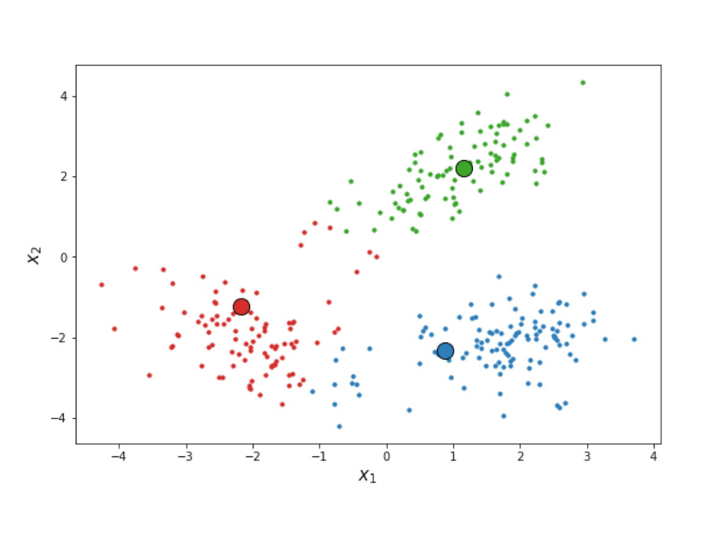
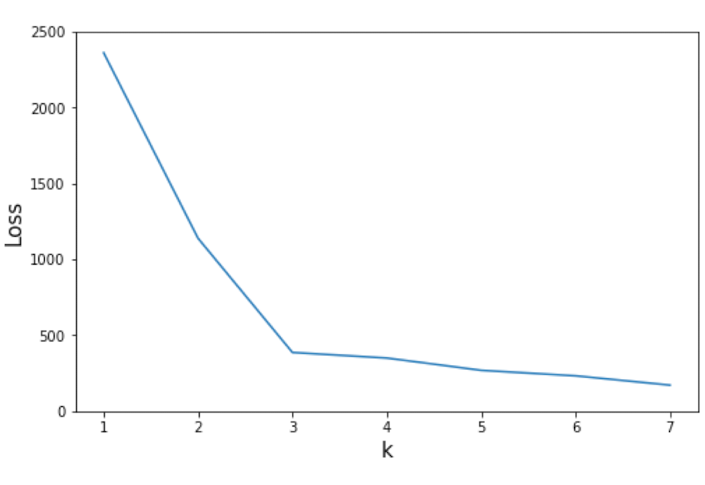

无监督学习
Contents
无监督学习¶
Unsupervised Learning
定义：In the unsupervised learning paradigm, we have features X, but no labels y. The goal is to learn some structure in in order to better understand the data.
找underlying structure of the model!
跟EDA其实是一个目的
种类：clustering、dimensionality reduction、anomaly detection
通常需要domain expertise
Choosing number of clusters
Defining a distance metric
Understanding what constitutes an anomaly (怎么才算缺失！）
比如： little probability points are actually are not anomalies because they’re just in different modes of the data which are normal.
比如机翼的fluctuate特别小的outlier可能是启动的时候都会有的现象
Clustering¶
定义：Clustering is the problem of organizing data points into groups (clusters), such that data points within each cluster are similar to each other.
K-means Clustering¶
The k-means algorithm groups data points into k clusters, based on the distance between each data point and it’s closest cluster center
算法¶

所有的features are weighted equally with l-2 norm
这个地方可以加权！
找停止的条件：
Data-center not moving
Loss Function: Some of squared error of all data points to the cluster center, adding all those up, see when that stablilizes ( not decrease much further)
缺点¶
聚类中心的个数K 需要事先给定，但在实际中这个 K 值的选定是非常难以估计的，很多时候，事先并不知道给定的数据集应该分成多少个类别才最合适
对噪声和离群点敏感；
Kmeans需要人为地确定初始聚类中心，不同的初始聚类中心可能导致完全不同的聚类结果。
K-means will produce different clusters (local optima) for different initializations of the cluster centers! ⇒ it’s possible that k-means finds a poor clustering of the data (shown on right).
原因：random-initializations ➕ non-convex!
解决方案：
Run k-means with multiple (random) initializations of clusters centers. Take the clustering with the lowest loss.、
Use k-means++ algorithm, which “spreads out” initial cluster centers over the feature space.
根据数据的分布来的
选择k的方法¶
One option is to rely on domain knowledge: are there known clusters in the domain that you wish to discover?
If not, a common approach is to plot the loss function of k-means over increasing , and choose to be the point where the loss looks reasonable.
- \[\operatorname{loss}=\sum_{i=1}^{m}\left\|\mu^{\left(y^{(i)}\right)}-x^{(i)}\right\|_{2}\]
选3
DBSCAN¶
DBSCAN(Density-Based Spatial Clustering of Applications with Noise)是一基于密度的聚类算法, DBSCAN将笶定义为密度相连的点的最大集合，能够把具有足够高密度的区域划分为簇，并可 在噪声的空间数据库中发现任意形状的聚类。
Dimensionality Reduction¶
Motive：
解释侧原因 ：we want a low-dimensional representation of the data which captures as much information as possible.
模型侧原因
有些需要非multi-collinearity！
lower the variance by getting rid of unnecessary features.
Adding more features考虑bias and variance of the model parameters的时候：
会increase model complexity
如果重新sample data训练模型的话 vary a lot in that case, you have a high variance model.！
PCA¶
在统计学中，主成分分析（PCA）是一种简化数据集的技术。它是一个线性变换。这个变换把数据变换到一个新的坐标系统中，使得任何数据投影的第一大方差在第一个坐标(称为第一主成分)上，第二大方差在第二个坐标(第二主成分)上，依次类推。主成分分析经常用减少数据集的维数，同时保持数据集的对方差贡献最大的特征。这是通过保留低阶主成分，忽略高阶主成分做到的。这样低阶成分往往能够保留住数据的最重要方面。但是，这也不是一定的，要视具体应用而定。
主成分分析的原理是设法将原来变量重新组合成一组新的相互无关的几个综合变量，同时根据实际需要从中可以取出几个较少的综合变量尽可能多地反映原来变量的信息的统计方法叫做主成分分析或称主分量分析，也是数学上处理降维的一种方法。主成分分析是设法将原来众多具有一定相关性（比如P个指标），重新组合成一组新的互相无关的综合指标来代替原来的指标。通常数学上的处理就是将原来P个指标作线性组合，作为新的综合指标。最经典的做法就是用F1（选取的第一个线性组合，即第一个综合指标）的方差来表达，即Va（rF1）越大，表示F1包含的信息越多。因此在所有的线性组合中选取的F1应该是方差最大的，故称F1为第一主成分。如果第一主成分不足以代表原来P个指标的信息，再考虑选取F2即选第二个线性组合，为了有效地反映原来信息，F1已有的信息就不需要再出现再F2中，用数学语言表达就是要求Cov（F1,F2）=0，则称F2为第二主成分，依此类推可以构造出第三、第四，……，第P个主成分。
PCA为什么要中心化？
因为要算协方差。
单纯的线性变换只是产生了倍数缩放，无法消除量纲对协方差的影响，而协方差是为了让投影后方差最大。
Principal component analysis (PCA) projects data to a lower-dimensional linear subspace, in a way that preserves the axes of highest variance in the data.
也就是会找到 best possible lower-dimentional sub-space来project data！
这个图上 我们依然可以see the cluster distinguished from each other!
比如如果是这样的一个平面，那么data的variance就会非常小因为都缩在一团了
Idea: use the first two principal components (instead of the 31 original features) to predict diagnosis. This will result in a simpler, low variance model.
算法
用之前要注意：standardize features to have zero mean and unit variance!
否则 features with high variance will dominate the principal component directions
这里的number就是PCA对应的系数
t-SNE¶
将不相似的数据点放置在较低维度区域时，数据点相距较远。但是为了在低维、非线性曲面的流型上表示高维数据，我们同时需要把相似的数据点放在一起展示，这就是线性方法的劣势。
T-SNE的核心想法是先把数据点散乱分布到低维上，让相同label的点互相吸引，不同的点相互排斥，从而实现在低维的聚拢和分类